|
平成２１年度 活動記録 |
2010/3/31・4/1 | |
◆ 春合宿（棒ノ折山〜蕎麦粒山〜三ツドッケ） |
JR川井駅⇒清東橋→百軒茶屋→棒ノ折山→百軒茶屋TS→獅子口小屋跡→日向沢ノ頭→蕎麦粒山→三ツドッケ→東日原⇒JR奥多摩駅 |
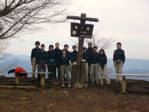 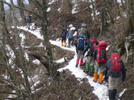 | |
2010/2/11 | |
◆ ウインターハイキング（武甲山） |
西武横瀬駅⇒生川登山口→武甲山→長者屋敷ノ頭→秩父鉄道浦山口駅 |
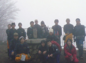
| |
2010/1/10 | |
◆ 葛飾柴又ロードレース大会 参加者：生徒11名 教員１名 |
昨年に続いて、部員全員で葛飾柴又ロードレースに参加した。今年は昨年の2.5倍の参加者ということで盛会であった。高校生は10km、中学生は2kmレースに参加し、一般男子の部で主将のK君が12位、中学女子の部でSさんが見事10位に入賞し表彰された。全員がほぼ目指したタイムで完走し、冬休みのトレーニングの成果が確認できた気持ちのよい１日であった。 |
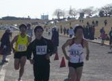
| |
|
2009/12/21〜23 | |
◆ 冬合宿（箱根外輪山 明神ガ岳〜金時山・丹沢 高取山〜仏果山） |
小田急新宿駅⇒新松田駅⇒関本→足柄ふれあいの家泊→最乗寺→矢倉沢峠→明神ケ岳→金時山→仙石⇒箱根湯元⇒小田急本厚木⇒愛川ふれあいの家泊→高取山 →宮ケ瀬越→仏果山→土山峠⇒小田急本厚木駅 |
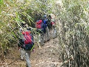
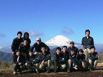 | |
2009/11/22・23 | |
◆ 秋合宿（房総半島 高宕山〜八郎塚・金山ダム〜元清澄山） |
JR君津駅⇒粟倉→石射太郎→高宕山→ 八郎塚→宿原⇒君津亀山青年の家TS⇒金山ダム→元清澄山→地蔵峠→三石山→久留里線・上総亀山駅⇒JR木更津駅 |
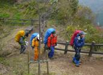 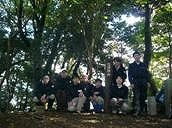 | |
2009/11/6〜8 | |
◆ 関東高等学校登山大会（奥久慈・男体山） |
JR日立駅⇒本山自然の村TS⇒佐中→釜沢越→鷹取岩→大円地越→男体山→男体山神社⇒本山自然の村⇒JR日立駅 |
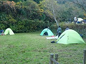 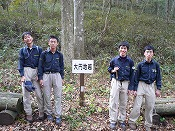 | |
2009/11/8 | |
◆ 奥武蔵ハイキング（奥武蔵・大高取山〜鼻曲山） |
東武越生駅→中央公民館→大高取山→傘杉峠→顔振峠→一本杉峠→鼻曲山→桂木観音→中央公民館→東武越生駅 |
| |
2009/9/12・13 | |
◆ 槐祭（学園祭）展示と山の歌コンサート |
今年も教室を会場に、合宿の記録パネルやテント・コンロなどの山道具を展示した。さらに山の歌コンサートを実施。今年は、旅鳥、穂高よさらば、エーデルワイスの歌、Bear in Tennis Shoes、風のように、岳人の歌を部員、顧問で合唱した。保護者の皆さんや部員の友人など多くの方に来場していただいた。部員たちも活動の様子を丁寧に説明し、その内容は好評を得た。 |
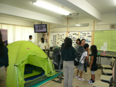 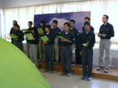 | |
2009/8/1〜6 | |
◆ 夏合宿（北アルプス・燕岳〜槍ヶ岳） |
JR穂高⇒中房温泉（幕営）→合戦尾根→燕岳→燕山荘（幕営）→切通岩→大天井岳→ヒュッテ西岳（幕営）→水俣乗越→槍ヶ岳山荘→槍ヶ岳→槍沢下降→槍沢ヒュッテ（幕営）→一ノ俣→横尾→徳沢→上高地⇒松本⇒小淵沢⇒高遠青少年自然の家（宿泊）⇒高遠町巡検⇒JR伊那駅⇒中央高速バス新宿 |
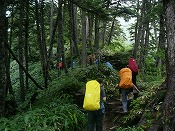
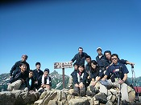 | |
2009/7/20 | |
◆ トレーニング山行（丹沢・大山） 参加者：生徒８名 教員３名 |
小田急伊勢原駅⇒ケーブル駅→男坂→阿夫利神社下社付近→見晴台→大山山頂→ヤビツ峠→蓑毛⇒小田急秦野駅 |
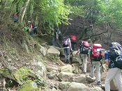 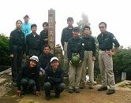 | |
2009/6/14・15 | |
◆ ６月合宿（大菩薩・牛の寝通り） 参加者：生徒９名 教員４名 |
JR塩山駅 ⇒ 大菩薩峠登山道入口 → 千石茶屋 → 上日川峠（幕営） → 大菩薩嶺 → 大菩薩峠 → 石丸峠 → 大ダワ → 田元橋バス停 ⇒ JR奥多摩駅 |
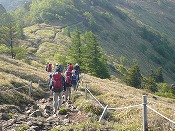 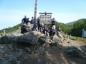 | |
2009/5/8・9 | |
◆ 千葉県高等学校登山大会（山ノ木戸山） |
JR奥多摩駅 → 氷川キャンプ場 一日目が幕営、技術、知識の審査。二日目が 氷川キャンプ場 → 稲荷神社 → 山ノ木戸山ゴール で体力審査。下山後、閉会式。 |
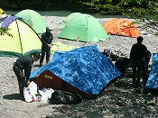 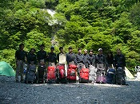 | |
2009/5/2・3 | |
◆ ５月合宿（尾瀬・燧ケ岳） 参加者：生徒10名 教員４名 |
JR沼田駅 ⇒ 大清水 → 三平峠 → 尾瀬沼（幕営） → 燧ケ岳ピストン → 三平峠 ⇒ JR沼田 |
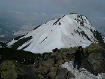 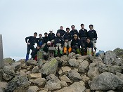 | |
2009/4/26 | |
◆ 新人歓迎山行 参加者：生徒10名 教員４名 |
JR奥多摩駅 → 安寺沢 → 本仁田山 → 奥多摩・氷川キャンプ場 → JR奥多摩駅 |
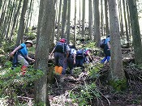 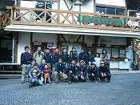 | |